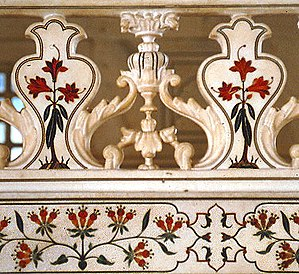
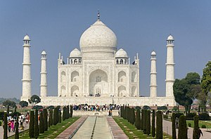
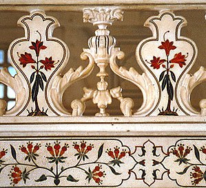
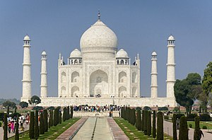

The Taj Mahal was commissioned by Shah Jahan in 1631, to be built in the memory of his wife Mumtaz Mahal, who died on 17 June that year, while giving birth to their 14th child, Gauhara Begum.[12][13] Construction started in 1632,[14] and the mausoleum was completed in 1648, while the surrounding buildings and garden were finished five years later.[15] The imperial court documenting Shah Jahan's grief after the death of Mumtaz Mahal illustrates the love story held as the inspiration for the Taj Mahal.[16]